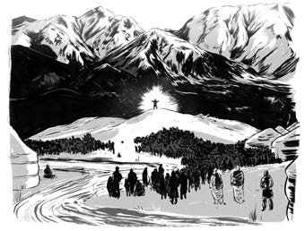
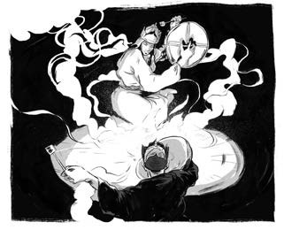
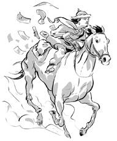
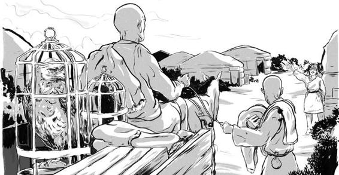

Một năm sau, vào năm 1206, Thiết Mộc Chân mở cuộc họp ở ven sông Onon, gần nơi ông sinh ra. Hàng nghìn người đến tham dự. Ger xếp thành những hàng dặm.

Dưới chân núi Burkhan Khaldun, các bộ tộc được thống nhất trên thảo nguyên chính thức tôn Thiết Mộc Chân làm thủ lĩnh. Ông lấy hiệu là Chinggis Khan. Theo tiếng Mông Cổ, chin có nghĩa là hùng mạnh hay dũng cảm và chino có nghĩa là sói. Khan nghĩa là người đứng đầu.
Ngày nay, ông được biết đến nhiều hơn với cái tên Genghis Khan hay Thành Cát Tư Hãn.
Rồi tiệc tùng được mở, nhạc được gióng lên. Những người đàn ông thi tài đua ngựa, đấu vật và bắn cung. Các pháp sư đánh trống ca ngợi sức mạnh tự nhiên và Trời Xanh Vĩnh Cửu.

THÀNH CÁT TƯ HÃN TRÔNG GIỐNG AI?
THÀNH CÁT TƯ HÃN KHÔNG CHO PHÉP AI VẼ CHÂN DUNG MÌNH, NÊN KHÔNG AI BIẾT DIỆN MẠO ÔNG RA SAO. CÁC BỨC TRANH VỀ THÀNH CÁT TƯ HÃN ĐỀU ĐƯỢC VẼ SAU KHI ÔNG QUA ĐỜI.
MỘT NHÀ SỬ HỌC BA TƯ ĐÃ MIÊU TẢ ÔNG CÓ THÂN HÌNH CAO TO, TUẤN KIỆT, VỚI ĐÔI MẮT MÈO RỰC SÁNG. MỘT HỌC GIẢ TRUNG HOA NÓI RẰNG ÔNG CÓ VẦNG TRÁN RỘNG VÀ BỘ RÂU DÀI. MỘT VÀI NGƯỜI LẠI NÓI ÔNG CÓ MÁI TÓC MÀU ĐỎ HUNG VÀ ĐÔI MẮT MÀU GHI HAY XANH ĐẬM. NHƯNG KHÔNG CÓ MIÊU TẢ NÀO LÀ CHẮC CHẮN CẢ.
Thành Cát Tư Hãn đã đặt tên mới cho lãnh thổ của mình: Đế quốc Mông Cổ. Một đất nước rộng lớn và là ngôi nhà của một triệu dân (cùng với hai mươi triệu loài động vật!).
Ông ban hành một bộ luật mới - Đại Luật - để giữ hòa bình và duy trì trật tự. Các bộ tộc có thể giữ trang phục và luật của riêng họ, với điều kiện phải tuân thủ Đại Luật.

Theo như Đại Luật, mọi nam giới từ mười lăm đến bảy mươi tuổi đều phải gia nhập quân đội. Trộm cắp và bắt cóc bị cấm. Chiếm hữu nô lệ ở Mông Cổ bị coi là phạm pháp. Trộm cắp sẽ bị xử tử. Một chương trình bảo tồn động vật được ban hành trên thảo nguyên. Mùa săn chính thức sẽ diễn ra vào hai mùa thu và đông, để những con non có thể trưởng thành vào mùa xuân và hè.
Ông còn thành lập đội truyền tin. Quân đội sẽ cung cấp ngựa và cử người đưa thư từ trạm này đến trạm khác. Mỗi trạm được đặt cách nhau hai mươi dặm, và do các gia đình địa phương quản lý. Khi đế chế Mông Cổ trở nên hùng mạnh, dịch vụ chuyển thư cũng phát triển theo.
Cuối cùng, dựa theo Đại Luật, tự do tôn giáo được bảo đảm. Mọi thần dân của Đế quốc Mông Cổ đều có quyền tự do lựa chọn tín ngưỡng.

.Thời điểm đó, không người Mông Cổ nào biết đọc hay viết. Để lưu lại Đại Luật, Thành Cát Tư Hãn đã ban hành một ngôn ngữ viết riêng cho dân chúng
Năm 1207, sau một năm dưới hiệu Thành Cát Tư Hãn, ông cử Truật Xích và mười nghìn quân đến phương bắc, tới Siberia. Ở đó, Truật Xích kết đồng minh với những bộ tộc sống trong rừng. Cậu trở về nhà với những tân binh mới cho đội quân Mông Cổ và các vật phẩm như lông thú, gỗ và chim săn mồi.
Thành Cát Tư Hãn vui vẻ nhận người và vật phẩm. Nhưng thứ mà ông thật sự muốn phía bên kia sa mạc Gobi là nước Đại Kim giàu có của người Nữ Chân ở phía bắc Trung Hoa. Đó là ngôi nhà của năm mươi triệu nông dân và dân thành thị. Phía sau bức tường thành vững chắc là thành phố với rất nhiều của cải châu báu, vàng bạc, ngọc ngà, lụa, vải sa tanh và kim loại.
Với quân đội hùng mạnh và kỷ cương nhất thế giới trong tay, Thành Cát Tư Hãn đã nhắm tới Trung Hoa.